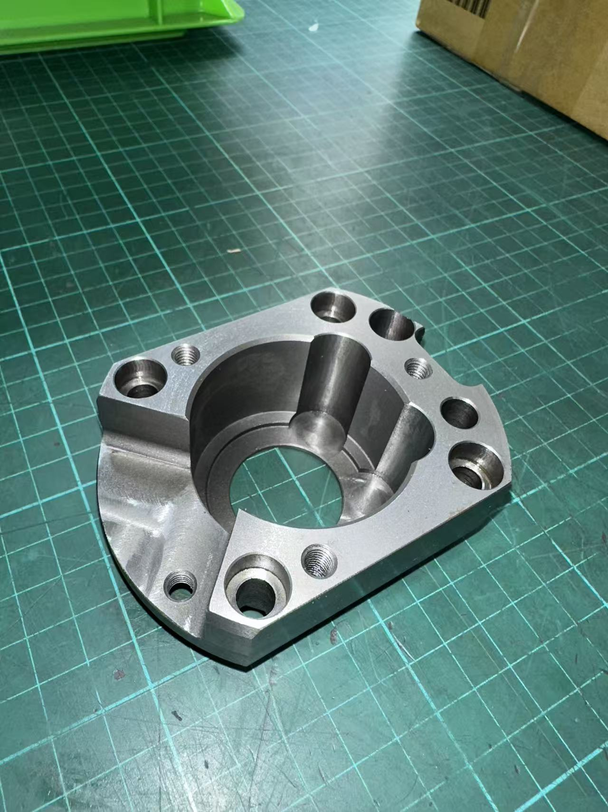
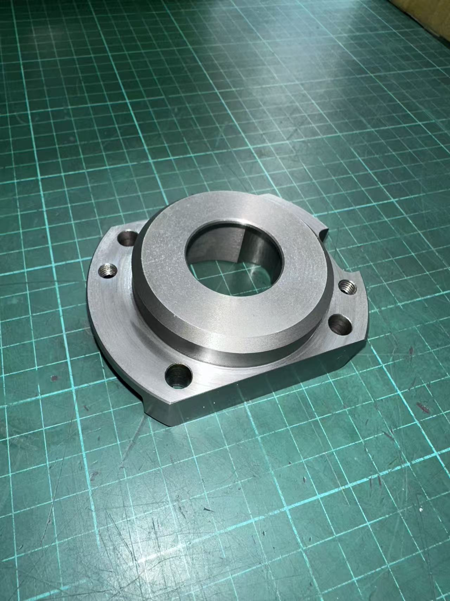
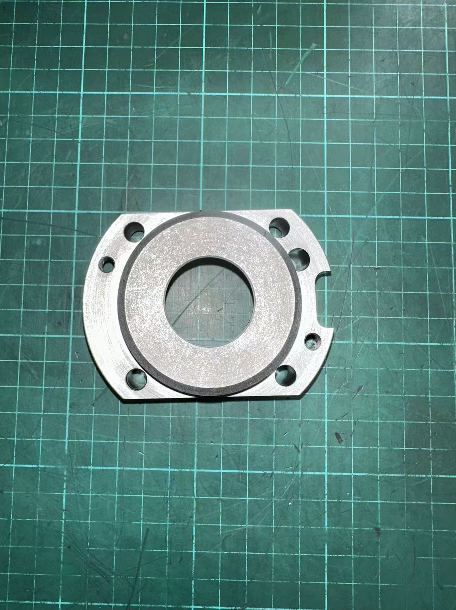
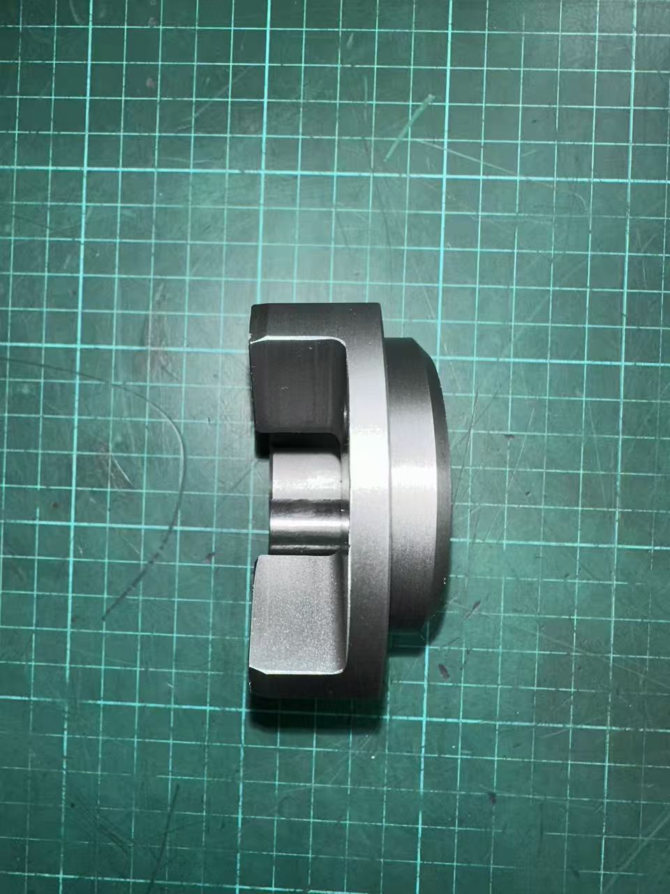
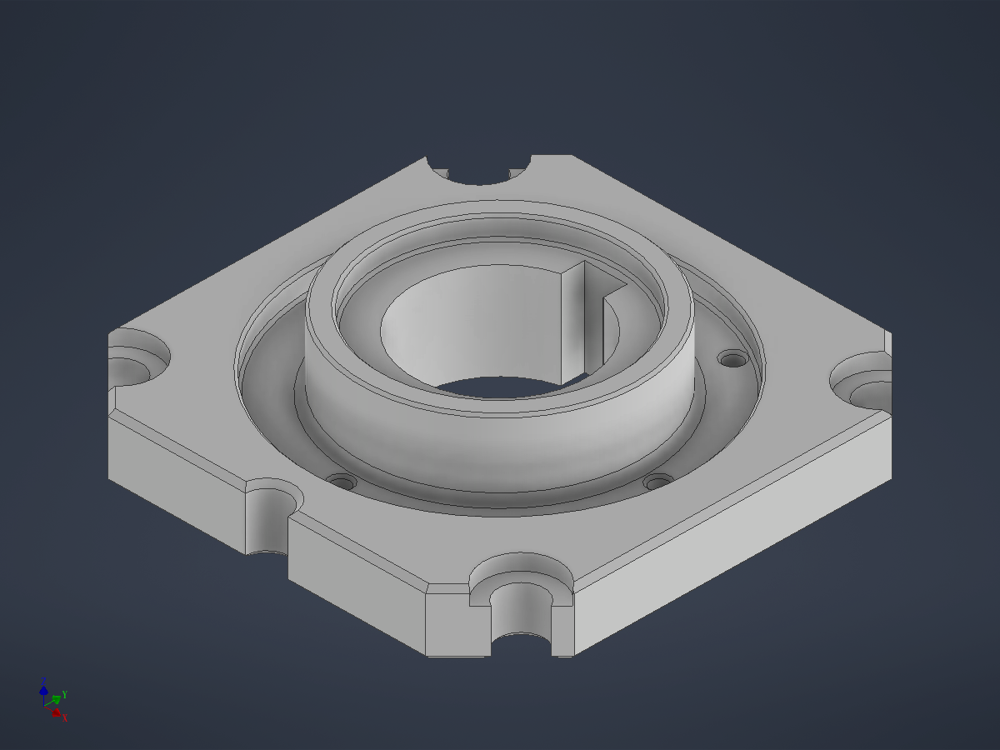
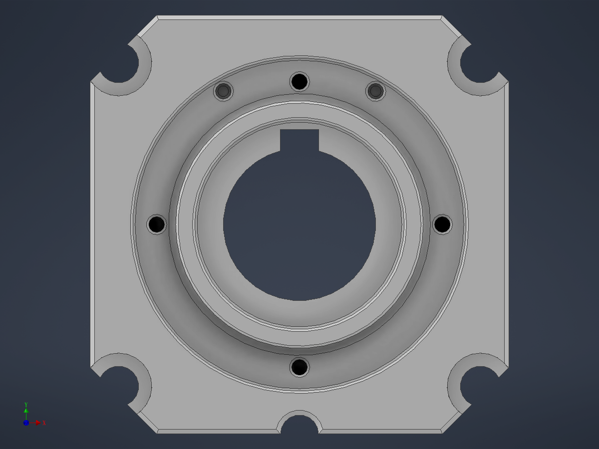
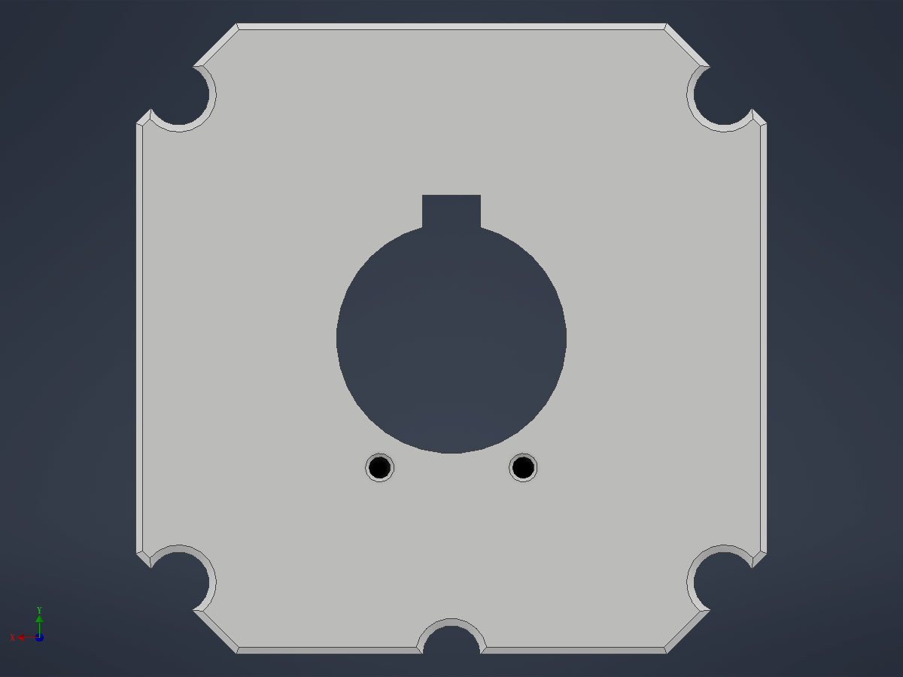

用戶照片 vs Claude 從照片建的 Inventor model (motor_flange_v14.ipt, 15 features)







01_BasePlate_88x88x12 八邊形基板 02_Hub_D52xH10 中央突起圓柱 03_Pocket_Ring_D70_d4 Hub 周圍環形凹陷 04_HubBaseFillet_R1.5 Hub-Pocket 圓角過渡 05_CounterBore_D44_d4 軸承座階梯 06_CenterBore_D32 中央通孔 6b_InnerKeyway_W8xD4 Bore 內壁軸鍵槽 07_MountingHoles_4xD8.5 4 個 M8 角孔 08_Keyway_U_W8xD4 下緣 U 形對位缺口 09_PocketThreaded_4xM4 Pocket 內 4 個 M4 (0/90/180/270°) 10_TopThreaded_2xM4 上邊 2 個 M4 11_DowelPins_2xD3 2 個定位銷孔 12_PlateEdgeChamfer_C1 Plate 外緣 C1 倒角 13_ChamferCircles_C0.5 所有圓孔 C0.5 入口倒角 14_CornerCountersink_4xD14 4 個角孔 Ø14×3 沉頭